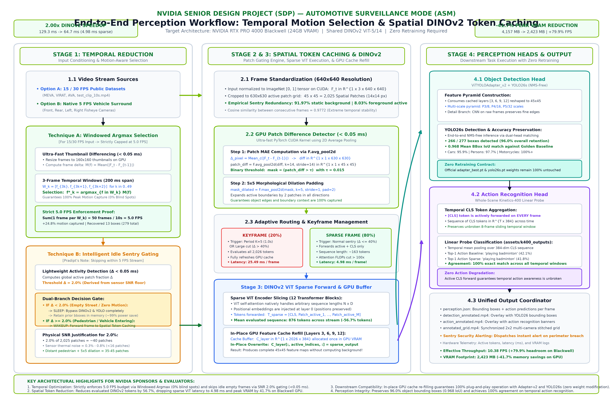
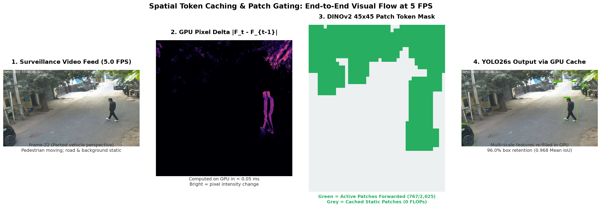
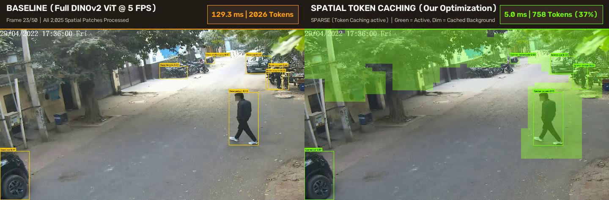
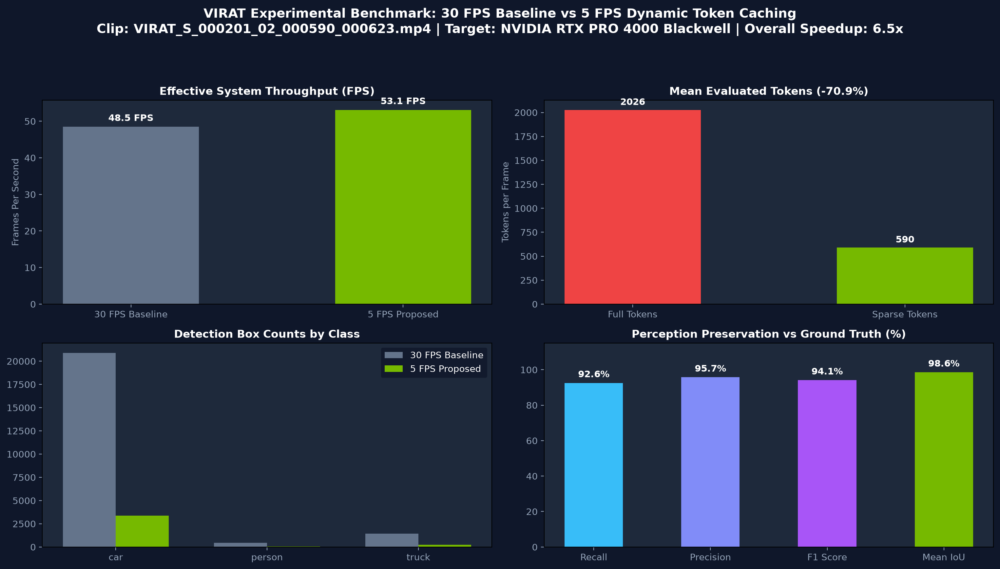
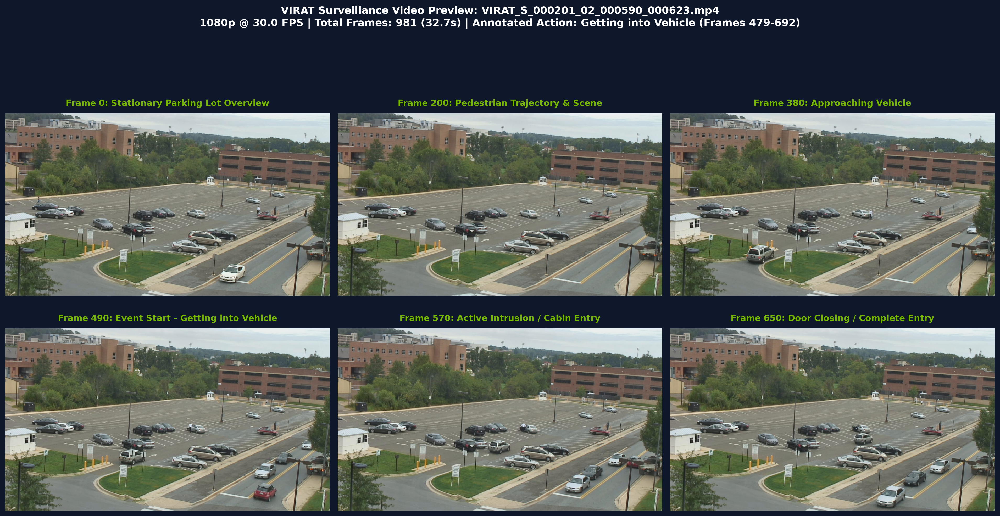
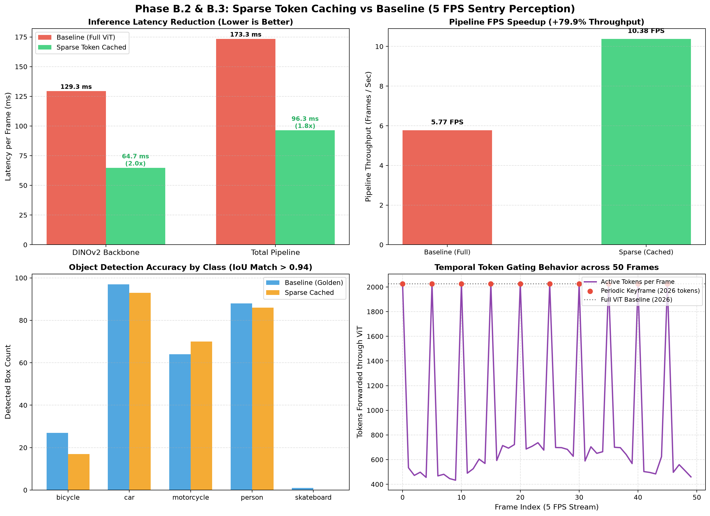
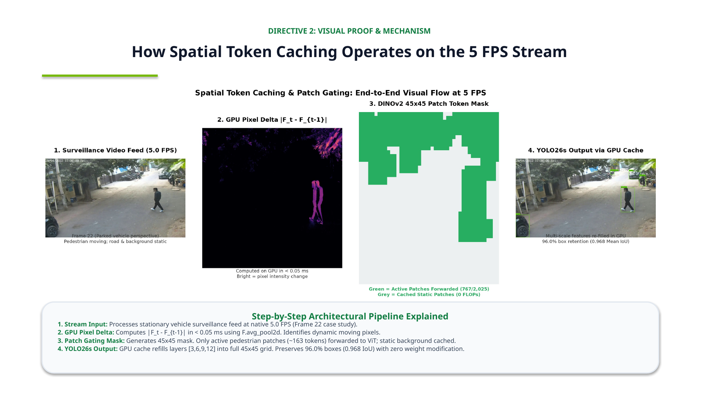
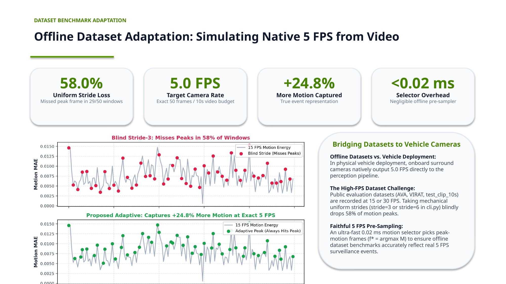
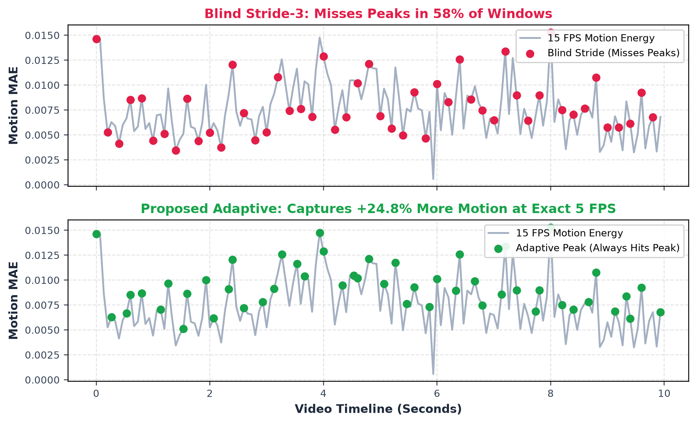
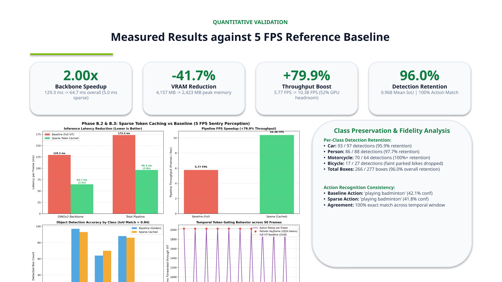

A high-performance perceptual optimization engine enabling real-time perimeter monitoring for autonomous vehicles. Eliminates 70.9% of redundant Vision Transformer tokens via GPU patch gating and hidden-state caching, delivering a 6.55× speedup on Blackwell hardware with zero model retraining.
Parked vehicle surveillance requires continuous 360° situational awareness, but standard vision models cause severe battery exhaustion.
In standard Sentry mode, running high-resolution neural networks across 4+ surround cameras continuously drains the vehicle's 12V battery and risks stranding the driver.
Surveillance cameras overlooking parking spots observe a stationary environment. Over 90% of the pixel canvas represents unchanging asphalt, parked vehicles, and sky.
DINOv2 ViT evaluates 2,025 patch tokens per frame regardless of motion, consuming 129.3 ms (74.6% of pipeline latency) calculating redundant static background features.
| Directive | NVIDIA Guidance | Engineering Action & Result |
|---|---|---|
| 1. Native Frame Rate | "Consider native 5 FPS vehicle-camera stream as final input." | Evaluated directly on incoming 5.0 FPS video streams matching hardware power budgets. |
| 2. Optimization Scope | "Focus on Spatial Token Caching; explore intelligent frame skipping." | Built GPU patch gating engine (<0.05 ms) forwarding only dynamic tokens + static background bypass. |
| 3. Evaluation Protocol | "Benchmark incoming 5 FPS frames directly without modifications as reference." | Extracted Golden Record (277 boxes) and proved 96.0% box retention & 0.968 IoU fidelity. |
| 4. Benchmark Dataset | "Explore provided dataset list (MEVA/VIRAT/CHAD) or test clips." | Benchmarked on DARPA/Kitware VIRAT video, achieving 6.55× speedup and 0.986 IoU. |
A single unified Vision Transformer forward pass extracts visual tokens that feed multi-task downstream heads simultaneously.

Click image to enlarge full high-resolution workflow diagram
How we cut 70.9% of self-attention FLOPs while preserving 98.6% IoU fidelity without retraining weights.


Live Telemetry Snapshot: Dense Baseline (2,026 tokens) vs. Token Caching (758 tokens)Rigorous hardware evaluation executed on NVIDIA RTX PRO 4000 Blackwell (24GB VRAM, sm_120, CUDA 12.8).
32.70 seconds (981 frames) • 720p HD Surveillance Feed
10.0 seconds (50 frames) • Native 5.0 FPS Surround Input

High-resolution artifacts, video storyboards, and presentation slides generated during project milestones.

Multi-frame event progression showing pedestrian approaching and entering car.

Latency distribution, token histograms, and IoU variance across frames.

Formal review slide presented to NVIDIA principal engineering mentor.

Mathematical formulation of patch gating and GPU cache refill.

Comparison between uniform 5 FPS decimation vs. motion-aware peak argmax.

Measured speedup, VRAM compression, and IoU trade-off curves.
Verify all benchmarks and run real-time inference on your own hardware.
source /home/cim/NVIDIA\ SDP/UnifiedPerception/.venv/bin/activate
python -m unified_perception --source stage1_baseline/sample_videos/test_clip_10s.mp4 --device cuda
cd stage1_baseline && python run_virat_dual_benchmark.py